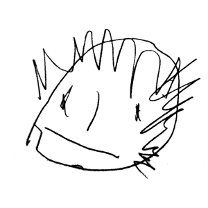

Antoine Abt, skier & web(geo)developer
I build websites, & mobile ones, with Open Source technologies. I’m experienced in webmapping.
I like simple, usable and accessible websites.
Currently working for camptocamp.
work
As a web developer for nearly 15 years, I've been working for:
- skipass.com — Grenoble,
- Agence Interactive — Lyon.
See my profiles on : github (@tonio), twitter (@brankgnol).

